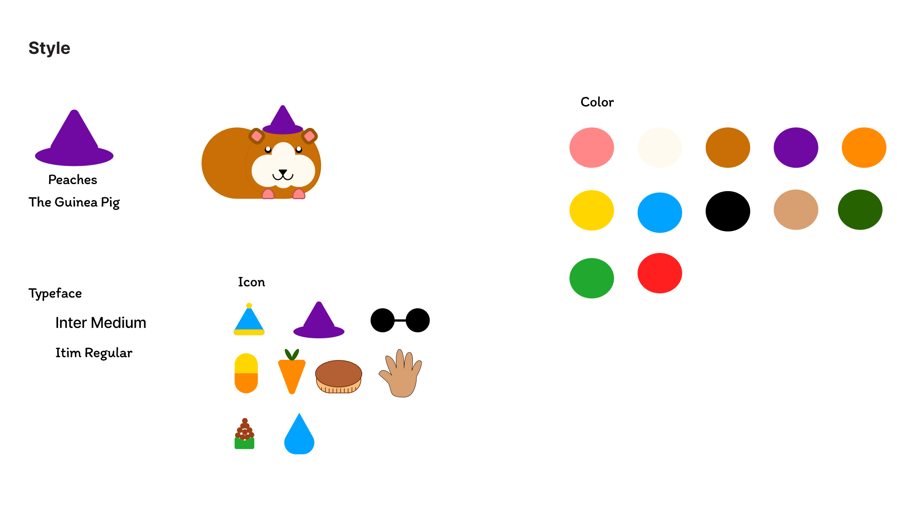
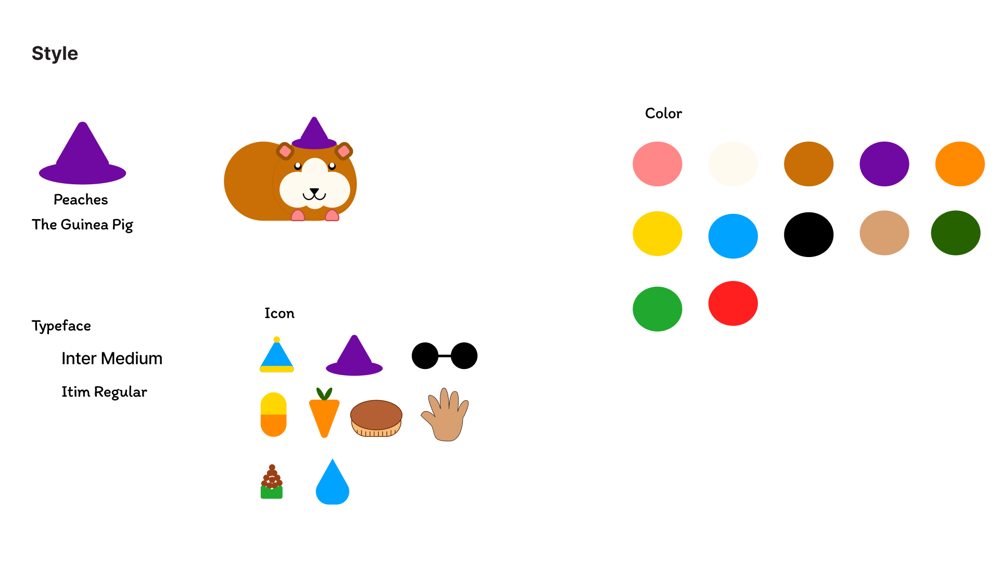

Tamagotchi: A Modern Redesign
Redesigning the Tamagotchi Toy for a Future Auidence
Project Context
Role: Product & UX Designer
Timeline: Spring 2023
Tools: Figma
Team: Sofia Grytsenko
Project Context
The Challenge
The classic Tamagotchi device is faced with some usability issues.
1. Unlabled Buttons
2. User can not go back in their selections.
3. Small Screen
How can we adapt this this toy to be more user-friendly and accessible to a new, modern auidence?
The Process
Ideation Prompt:
What if the online shopping experience could be seamlessly combined with your everyday “getting ready” process?
Research & Insights
"I work from home so it's nice to be able to pause a stressful interaction to take 5 minutes to check on my little guys." - Tamagotchi User
The Tamagotchi shell is stated by many users as why they are so attracted to the device. I wanted to reinvoke those feelings and use a nostalgic shell design, like a T.V or iPod.
Exploration & Ideation
This Tamagotchi includes a Guinea Pig character, inapired by the everyday activities guinea pig owners have to do.
The shell started as a miniature CRT T.V, as I wanted to keep the nostalgic air that the brand carries. But, through user testing, it was simplified to an old iPod.
Design Development


The Solution
This is a fully interactive experience, prototyped in Figma, optimized for an iPod-like device. The app captures the nostalgic charm of the original Tamagotchi while utilizing modern interface design principles to enhance the user experience. The prototype showcases a seamless user interface with clean, minimalistic icons and intuitive navigation.
 


Outcome & Impact
The final prototype demonstrates how nostalgic hardware metaphors can be adapted into intuitive digital interfaces without sacrificing emotional resonance.
Key Outcomes:
1. Reduced cognitive load through labeled controls and simplified navigation patterns.
2. Enabled users to pause and resume interactions seamlessly, supporting short stress-relief moments during the workday.
3. Increased emotional engagement by grounding the virtual pet’s behaviors in real-world guinea pig care routines.